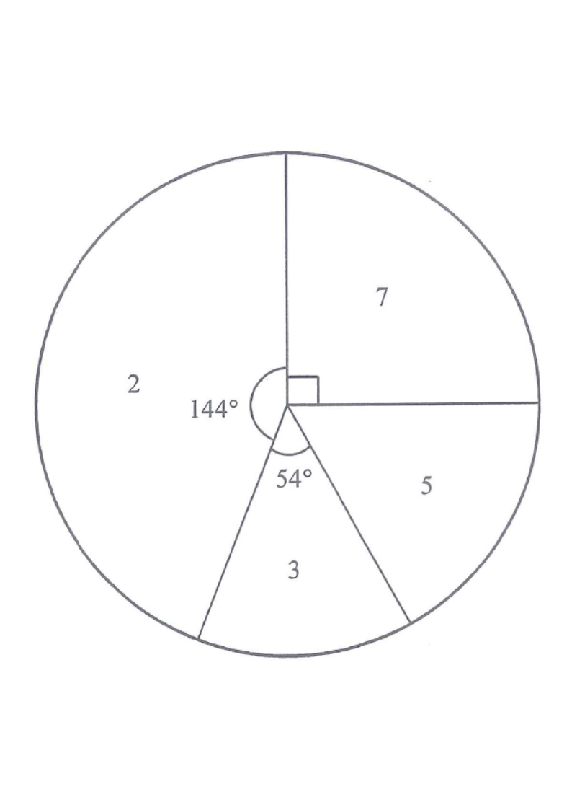

Step 1 · Given: sector angles 144°, 54°, 90°; the last sector = 360° − 144° − 90° − 54°.
HKDSE 2019 Paper 1 Q8 · 15. Statistics
The pie chart below shows the distribution of the number of rings owned by the girls in a group.

Figure (original exam diagram)
(The pie chart in the left pane: the four sectors correspond to owning
$2$, $3$, $5$ and $7$ rings respectively; the sector angles are $144^\circ$, $54^\circ$, $90^\circ$ and $72^\circ$.)
Write down the mode of the distribution.
Find the mean of the distribution.
If a girl is randomly selected from the group, find the probability that the selected girl owns more than $3$ rings. [5 marks]
1 Read off the pie chart
The sector with the largest angle is the $144^\circ$ sector, and that sector is labelled
"$2$". So more girls own $2$ rings than any other number.
Mode = the data value with the largest sector — the biggest angle wins.
2 Part (a) — the mode
The largest angle is $144^\circ$, which belongs to the "$2$" sector.
\[\text{Mode}=2 \qquad \text{(1A)}\]
Only the value "2" is needed — no working required for this 1 mark.
3 Part (b) — find the missing sector angle
Sector angles add up to $360^\circ$. The four labelled sectors use
$144^\circ+54^\circ+90^\circ$, so the $7$-rings sector has angle